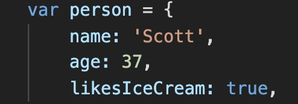
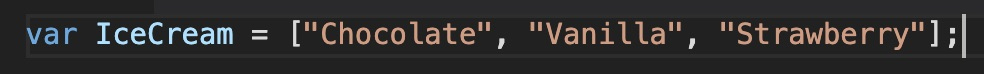

Javascript Concepts
In this post I would like to run you through some fundamental Javascript concepts.
1 December 2019

What are the differences between HTML and CSS?
One way to think about the differences between HTML and CSS would be to think about a website as a house. The HTML would be the structure of the house and would contain the foundations, the roof, concrete, pillars etc.
The CSS is how the house would look and how it was decorated. The style of wallpaper, the colour of the carpet, the size and finishing of the kitchen etc would all be the equivalent to the CSS of a website.
Understanding Control flow and Loops
In basic terms control flow, as it relates to computer science, is the order in which a set of instructions or functions are executed. We can change that order by using loops. A loop is a piece of code that will keep repeating until a specified condition is met. Loops are important because they help us to simplify tasks, instead of repeating a set of instructions over and over again we can create a loop which will do this for us.
An everyday analogy could be when I am cooking dinner. I like to complete all of my preparation work and do all of the chopping before moving onto the next stage of the cooking. You could think of this as the control flow because I know I cannot move onto the next task until this is completed.
Now what if I wanted to make the chopping easier? I could do it all by hand and individually chop each vegetable one at a time or I could get myself one of those fancy vegetable choppers! This way I can chop multiple vegetables at the same time and save myself some time and effort. This would be the equivalent of using a loop when programming.
What is the DOM and how do you interact with it?
If the HTML defines the structure of a website and CSS provides the appearance and Javascript is the interactivity you could think of the DOM as the glue that binds it all together. The DOM consists of nodes which are made up of all the elements, attributes, content etc. It is essentially a different representation of the the HTML format and turns it into a tree format so that the Javascript can then interact with it.
With the DOM developers can build documents, navigate their structure and add, modify, or delete elements and content when writing Javascript.
The difference between accessing data from arrays and objects.
Objects
An object is something that is made up by a number of characteristics. These characteristics are called properties and they consist of a key and a value. You could think of an object as a person or a car or even a movie. The code would look something like this;
style="font-size: 20px"In this example the keys would be Name, age and likesIceCream. We then have the corresponding values of each with a string, number and boolean.
Arrays
Arrays are special variables that are used to store multiple values in one single variable. They are a way for us to use Javascript to store a list of multiple items. They look like this;
To think about the difference between Objects and Arrays and how they are used think of the array as a book and the object as a newspaper. You use an array when the order of the information is the most important to you. Books are generally laid out in chapters and meant to be read sequentially and the order matters.
Objects on the other hand are like newspapers. You very rarely read them cover to cover and often will flip around. You can flip to each section immediately and see the relevant information for that section.
Functions and why they are useful.
A function in Javascript is a section of code that is written to perform a task. A function happens when it is ‘called’ or ‘invoked’. All functions are objects and they should always return a value.
They are useful because they allow programmers to pass different values into the function over and over again to see the results which can save a lot of time.